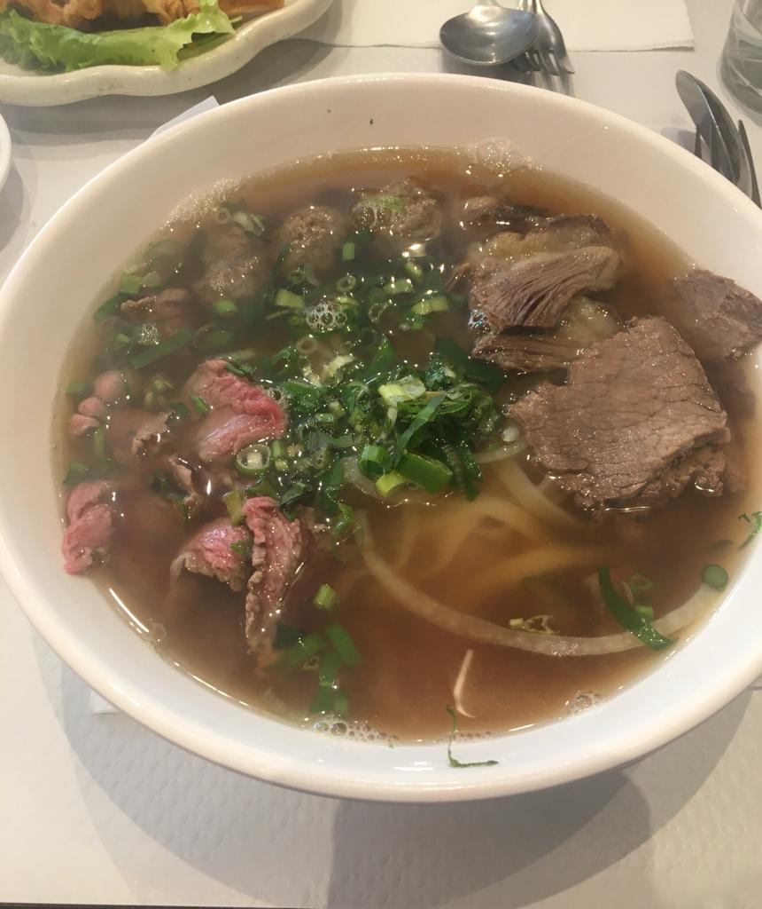

Phở Bò

Description
Le Phở Bò (soupe vietnamienne de nouilles au bœuf) est le plat national du Vietnam.
La soupe est née au début du 20e siècle dans le nord du Vietnam et a été rendu populaire dans le monde entier par les réfugiés après la guerre du Vietnam.
Phở Bò est une soupe de nouilles au bœuf composée d'un bouillon d'os de bœuf aromatique, de nouilles de riz et de nombreuses herbes, légumes et bien sûr du bœuf.
La liste des ingrédients
- 2 os à moelle
- 500g de plat-de-côtes avec os
- 500g de plat nerveux ou de merlan
- 1 paquet de boulettes de boeuf
- 3 anis étoilés
- 3 c. à s. de graines de corriande
- 1 sachet pour bouillon en tissu
- 2 oignons
- 1 gros morceau de gingembre
- 10 c. à s. de sauce de poisson nước mắm Squid
- 2 c. à s. de sucre
- Des piments rouges frais
- 1 citron
- 2-3 branches de ciboule
- Des feuilles de basilic thaï
- Des tiges de coriandre longue
- Des pousses de soja
- Des pâtes sz eia Cock
- Sauce Hoisin Yeo's
Préparation
- Griller un oignon et le gingembre sur le feu d'une plaque de cuisson (type plancha) ou dans une petite poêle chaude.
- Torréfier les anis étoilés, les graines de coriandre, les clous de girofle et les bâtonnets de cannelle.
- Remplir le sachet de bouillon de ces épices puis bien fermer.
- Ciseler l'autre oignon puis le réserver dans un bol rempli de vinaigre et d'1 c. à s. de sucre.
- Rincer les os à moelle et le plat-de-côtes afin de retirer les impuretés.
- Dans une grande marmite remplie d'eau, placer les os à moelle, le plat-de-côtes, le sachet d'épices torréfiées, l'oignon et le gingembre grillés. Laisser mijoter à feu doux pendant 3 h. Ecumer de temps en temps la surface du bouillon.
- Ajouter les 10 c. à s. de sauce poisson nước mắm et les 2 c. à s. de sucre. Rectifier l'assaisonnement selon vos goûts puis laisser mijoter de nouveau à feu doux pendant 3 h.
- Retirer ensuite le plat-de-côtes puis les découper en tranches, découper aussi le plat nerveux en tranches.
- Ajouter les boulettes de bœuf dans le bouillon et laisser mijoter à feu très doux.
- Ciseler la ciboule, les piments frais, découper le citron en quartiers fins.
- Nettoyer les tiges de coriandre longue, les feuilles de basilic thai et les pousses de soja.
- Cuire les pâtes de riz dans de l'eau bouillante, et les placer dans un grand bol à soupe.
Ajouter ensuite les viandes tranchées puis verser du bouillon accompagné des boulettes de boeuf.
Parsemer de ciboule ciselée, de piments frais, d'oignon mariné, de coriandre longue, de feuilles de basilic et de pousses de soja. Presser un filet de citron.
- Déguster les viandes avec l'onctueuse sauce Hoisin Yeo's.
Bonne appétit !
Main page